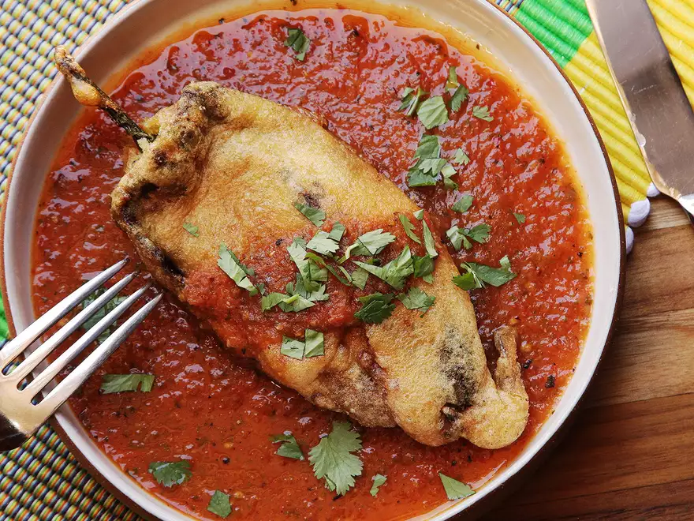

Best Chile Relleno

Description
Chiles rellenos—Mexican-style stuffed and fried peppers in a roasted-tomato salsa—was
one of the very first dishes I learned how to cook, using the method that my dad taught me.
It mostly involved cans. I'm pretty sure that the only reason we used canned chilies back then
is that it wasn't possible to get good fresh Poblano peppers in New York in the early '80s.
That's not a problem anymore (and certainly not an issue near my current home in the Bay Area),
and both my recipe and my technique have improved since those early can-based days. I've experimented
with various chili-roasting methods and dozens of batter recipes and techniques, and I've finally
nailed that salsa. Here's what I've learned.
Ingredients
- 6 Poblano peppers
- 2 pounds Roma tomatoes (1kg; about 6 medium)
- 1 small yellow onion (about 6 ounces; 170g), split in half, unpeeled
- 2 to 3 serrano chilies
- 6 medium cloves garlic, unpeeled
- 1/2 cup (120ml) chicken stock or water
- 1/2 cup loosely packed cilantro leaves and tender stems (1/2 ounce; 15g)
- 1 tablespoon (15ml) lard or vegetable oil
- Kosher salt and freshly ground black pepper
- 1 tablespoon (15ml) lard or vegetable oil
- 1 small onion (about 6 ounces; 170g), finely diced
- 1 teaspoon (about 2g) dried oregano
- 1/2 pound (225g) fresh Mexican chorizo or ground pork
- Kosher salt and freshly ground black pepper
- 10 ounces (285g) grated Jack, pepper Jack, Chihuahua, or cheddar cheese; 16 ounces (450g) if making smothered version (see note)
- 2 cups (475ml) vegetable oil
- 4 large eggs, separated
- 1 cup flour (5 ounces; 140g), divided
Steps